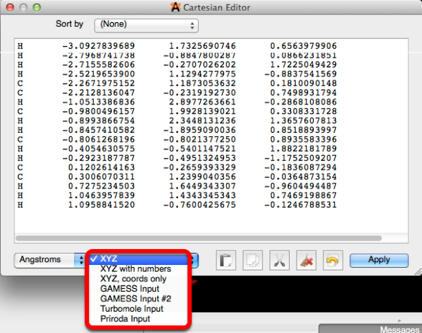

Build Menu#
The build menu helps to ease the process of constructing molecules.

Cartesian Editor…#
“Cartesian Editor…” when selected provides you with the capability to manually adjust bond lengths. The dialog box for the cartesian editor is displayed below.

1. Sort by…#
The sort by drop down menu will rearrange the data in the dialog box for your convenience. Sort by can arrange the data by element, or by location of the atom. All of the data for sorting by X, Y, and Z coordinates will start reading at the atom to the furthest left in the molecule, and continue until it reaches the atom at the right most point.

2. Unit of Measure#
Avogadro provides three units of measure to adjust bond lengths, Angstroms, Bohrs, and Fractional coordinates. A unit cell must be defined to use fractional coordinates.

3. Editing & Modifying Data#
Editing the data is as simple as clicking on the number you wish to edit, and typing in a new coordinate. After clicking “Apply” and returning back to the Avogadro display screen, you should notice that the atom has changed position.
The displayed data can also be modified according to your personal preference, or for the use of additional plugins.

Change H to Methyl#
“Change H to Methyl” will replace any Hydrogens present in the display window with methyl groups. Depicted below is acetone with all of its hydrogens replaced by methyl groups.

Add Hydrogens#
“Add Hydrogens” will satisfy the valency of the atoms present with hydrogens.

Add Hydrogens for pH…#
“Add Hydrogens for pH…” will create a dialog box (displayed below) that allows you to adjust the pH of the molelcular environment. This feature will add (or subtract) acidic hydrogens to ionizable groups in peptides, according to the desired pH.

Remove Hydrogens#
“Remove Hyrogens” will delete all hydrogens in the display screen.

Insert#
“Insert” provides a faster, simpler way of building molecules. A depicted below, you can insert DNA/RNA, a Fragment, a Peptide, and can also insert a molecule based on SMILES text.

Invert Chirality#
“Invert Chirality” will reverse (invert) the initial chirality to the opposite R/S configuration.

Super Cell Builder…#
Information on the Super Cell Builder can be found in “Building and Editing Crystals and Materials” section.
Nanotube Builder…#
Information on building Carbon Nanotubes in Avogadro can be found in the “Building Molecules” section.